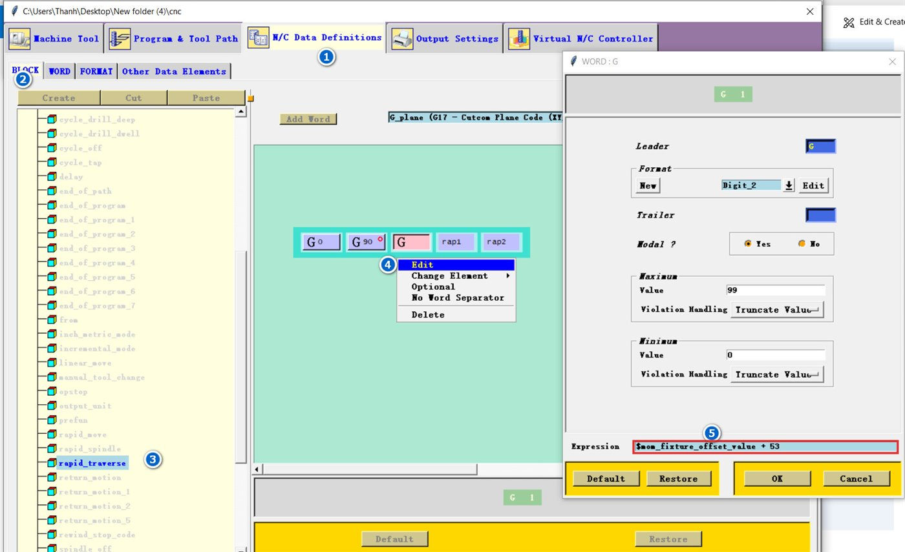
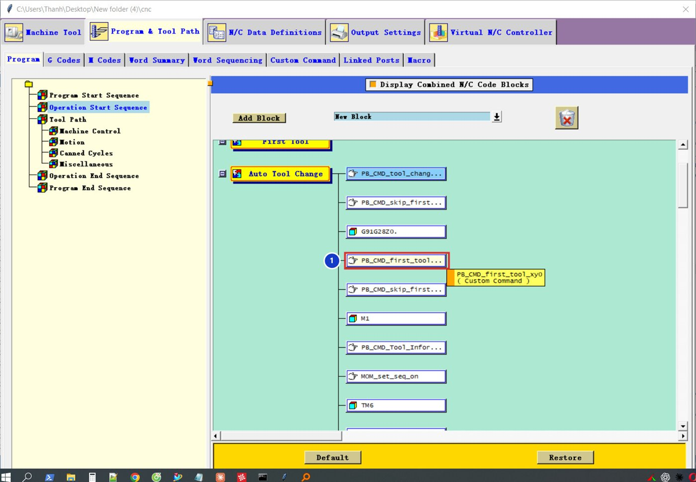

Kết quả
G17G40G80G49G94G21
G91G28Z0
G0G90G54X0Y0
N1T7M6
G0G90G54X0Y0
G43H7Z50.M8Tải về: code lệnh về X0Y0.
Phần 1 — G54…G59 theo Fixture Offset
Sửa biểu thức của từ G trong khối chạy nhanh
N/C Data Definitions 1 → BLOCK 2, chọn khối rapid_traverse 3 (và rapid_move nếu có). Chuột phải vào từ G thứ ba → Edit 4. Ở ô Expression 5 nhập:
$mom_fixture_offset_value + 53

G54, 2 → G55 … 6 → G59.Đặt Fixture Offset trong NX
Trong NX CAM, mở MCS → mục Fixture Offset: 1 = G54, 2 = G55 … 6 = G59.
Với công thức + 53, giá trị 0 xuất G53 (toạ độ máy): G0G90G53X0Y0 chạy nhanh về gốc máy, không phải gốc phôi. Bước 03 dưới đây chặn lỗi này.
Chặn G53 khi quên đặt Fixture Offset
Custom Command → Create, tên fixture_offset_guard, dán code. Rồi mở PB_CMD_before_motion, thêm một dòng PB_CMD_fixture_offset_guard (giống cách gọi ở bài cảnh báo S = 0).
global mom_fixture_offset_value mom_operation_name thanhcam_g53_warned
if { [info exists mom_fixture_offset_value] && [string is integer -strict $mom_fixture_offset_value] && $mom_fixture_offset_value >= 1 } { return }
set mom_fixture_offset_value 1
if { ![info exists thanhcam_g53_warned($mom_operation_name)] } {
set thanhcam_g53_warned($mom_operation_name) 1
MOM_display_message "Operation $mom_operation_name: Fixture Offset = 0 se ra G53. Da doi sang G54, kiem tra lai MCS." "Canh bao G53"
}Lệnh chỉ sửa các dòng chạy nhanh trong nguyên công. Dòng về gốc máy cố định ở cuối chương trình vẫn giữ nguyên:
G91G28Z0
G28Y0
G0G90G53
M30Phần 2 — về X0Y0 trước dao đầu tiên
Tạo lệnh first_tool_xy0
Custom Command → Create, tên first_tool_xy0, dán code. Lệnh chỉ chạy một lần mỗi chương trình và dùng cùng quy tắc + 53 ở trên.
global thanhcam_xy0_done mom_fixture_offset_value
if { [info exists thanhcam_xy0_done] } { return }
set thanhcam_xy0_done 1
if { [info exists mom_fixture_offset_value] && [string is integer -strict $mom_fixture_offset_value] && $mom_fixture_offset_value >= 1 } {
MOM_output_literal "G0G90G[expr {$mom_fixture_offset_value + 53}]X0Y0"
} else {
MOM_output_literal "G0G90G54X0Y0"
MOM_output_to_listing_device "Work offset unknown at program start; used G54 for the first X0Y0 move"
}Đặt sau G91G28Z0. trong Auto Tool Change
Kéo PB_CMD_first_tool_xy0 vào Auto Tool Change, ngay dưới khối G91G28Z0. 1: trục Z lên an toàn rồi mới chạy XY.


PB_CMD_first_tool_xy0.